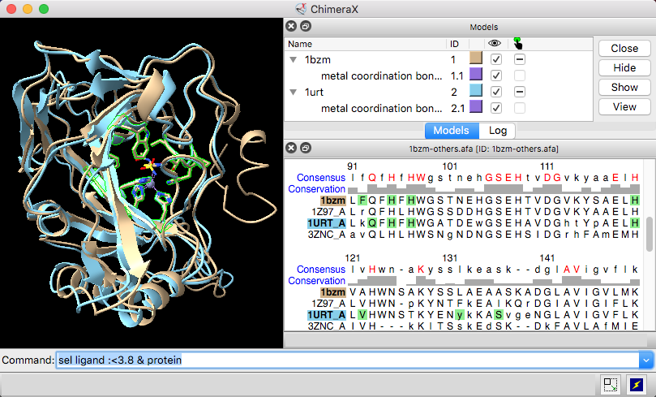
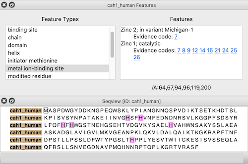

|  |
| Models #1 1bzm and #2 1urt associated with sequences in an alignment, with ChimeraX selection sequence region. |
The Sequence Viewer displays individual sequences and sequence alignments of amino acids and nucleotides, with crosstalk to any associated structures. To find and select a specified sequence or sequence pattern, use Select... Sequence in the menu or the select command. See also: modeller, Coloring by Sequence Conservation
Sequences for biopolymer structures in ChimeraX can be shown:
Independent of structure, sequence alignments and individual sequences can also be opened from files or fetched from UniProt. Other tools or commands may generate new sequence alignments (e.g., Blast Protein results, Matchmaker, sequence realignment).
Multiple Sequence Viewer windows can be shown at the same time, and they can be manipulated like other panels in ChimeraX (more...).
Context Menu
Headers
Regions
UniProt Sequence Features
Sequence-Structure Association
Settings
Each Sequence Viewer window has a context menu with choices including:
Sequence headers are rows of information above the sequences, such as a Consensus sequence, Conservation histogram, or histogram of the RMSD (root-mean-square displacement) among multiple associated structures. Which headers are shown initially and how they are calculated can be controlled in the Headers settings. Headers for a specific window can be shown, hidden, or saved to a file with the Sequence Viewer context menu or the sequence header command.
Per-column header values are assigned as attributes of the structure residues associated with sequences in the alignment. The numerical attributes (those from headers displayed as histograms) are named “seq_name,“ where name is the name of the header, for example, seq_conservation or seq_rmsd. The structures can be colored to show the values of such numerical attributes, as in the tutorial: Coloring by Sequence Conservation.
Sequence regions are colored boxes or outlines that enclose one or more residue symbols. A single region may contain any number of disjoint and/or abutting boxes. Pausing the cursor over a region (but not directly over a residue symbol) shows its name in a pop-up balloon.
Some regions are created automatically, such as by association with a structure. Regions can also be created manually by dragging within the sequence window. Manually created regions are shown in this color (default, see Regions settings).
The active region is the region most recently clicked or created by dragging, and is indicated with a dashed outline. Shift-dragging with the left mouse button adds to the active region, whereas Ctrl-dragging creates a new region and makes it the active region. (On Mac, command key replaces Ctrl.) Backspace/delete deletes the active region. Clicking the active region deactivates it, and clicking a different region deactivates the former active region and makes the new region active. A region with no interior color is only responsive to clicks on its borders.
|  |
← UniProt Sequence Features
Sequences fetched from UniProt may include several annotations. These “sequence features” are automatically assigned as regions in the sequence window. The features are hidden by default, but a dialog for browsing and displaying them appears when the sequence is first opened. This dialog can be reshown at any time by choosing Sequence Features... from the context menu.
Choosing a feature type on the left side of the dialog shows the regions for all features of that type; if multiple features of that type are listed on the right, clicking (choosing) any one shows just the region for the individual feature. When the dialog has mouse focus, starting to type the name of a feature type instantly chooses that entry. The up and down arrow keys can also be used to navigate the dialog. Feature listings may include links to evidence code descriptions in the Evidence & Conclusion Ontology and/or sequence variant entries in dbSNP.
The border and interior colors of the currently shown feature region(s) can be changed by clicking the color wells and using the system color editor, and checkboxes allow leaving either the border or the interior uncolored. The initially assigned colors may vary between different instances of opening the same data.
If a structure is associated with the sequence, the corresponding structure residues are listed in the lower right area of the dialog. For example, the figure shows all metal ion-binding site regions in UniProt sequence cah1_human, corresponding to residues 64,67,94,96,119, and 200 in chain A of the associated structure, PDB 1bzm. A checkbox option allows automatically selecting the associated structure residues (if any) as features are chosen.
A sequence that arose from a structure's chain information is automatically associated with that chain, with regions for protein structure helices and structure strands. Such sequences are closed when their structure chains are deleted or closed, and they are not automatically associated with other structure chains.
When sequences and structures are opened independently, a structure chain will be associated automatically with a sequence if their sequences can be aligned without mismatches exceeding 1/10 of the residues in the structure chain. The association and number of mismatches will be reported in the Log. For automatic association,
For manual association, both of the above are allowed, but only the “extra” residues in the structure not associated with any positions in the sequence (minus the length difference if the structure sequence is longer) are counted along with mismatches and reported in the Log.
Associations can be controlled manually (forced or removed):
In the sequence window, regions may be created to show mismatches and missing residues according to the association. If a mismatch or missing residue only occurs in a subset of multiple associated chains, a pink box or gray outline is shown instead (default, see Regions settings).
Further effects of association:
Choosing Settings... from the Sequence Viewer context menu shows its settings in a separate window, with sections:
The settings window can be manipulated like other panels in the ChimeraX interface (more...).
Save saves the current settings as preferences, Reset replaces the current settings with the initial “factory” defaults (values shown in bold below), and Restore restores values that were saved previously. The Buttons below... option indicates whether these buttons should apply only to the currently shown section (e.g., Appearance) or to all of the Sequence Viewer preferences. Although there can be multiple settings windows with different values for multiple Sequence Viewer windows, there can be only one set of saved preference values.
← Appearance – how text is displayed in the Sequence Viewer window
← Headers – rows of information above the sequences in an alignment (more...)
AL2CO: calculation of positional conservation in a protein sequence alignment. Pei J, Grishin NV. Bioinformatics. 2001 Aug;17(8):700-12.Conservation values from AL2CO are in standard deviations from the mean (Z-scores) and can range from –∞ (least conserved) to +∞ (most conserved). For purposes of histogram display only, the values are mapped to bar heights 0-1, with conservation values of zero giving a histogram bar height of 0.5.
When more than one chain per model is associated with the same alignment, the RMSD calculation uses only the chain that gives the lowest overall RMSD.
← Regions – creation and display of regions (colored boxes)
The Regions section of settings controls whether different types of regions should be shown, and if so, their initial colors. Each color well can be clicked to choose a color interactively. On/off checkboxes indicate whether to color the region border (box outline) and/or interior (box fill), whereas full and partial refer to whether the region applies to all structures associated with a position or to only some fraction of those structures.